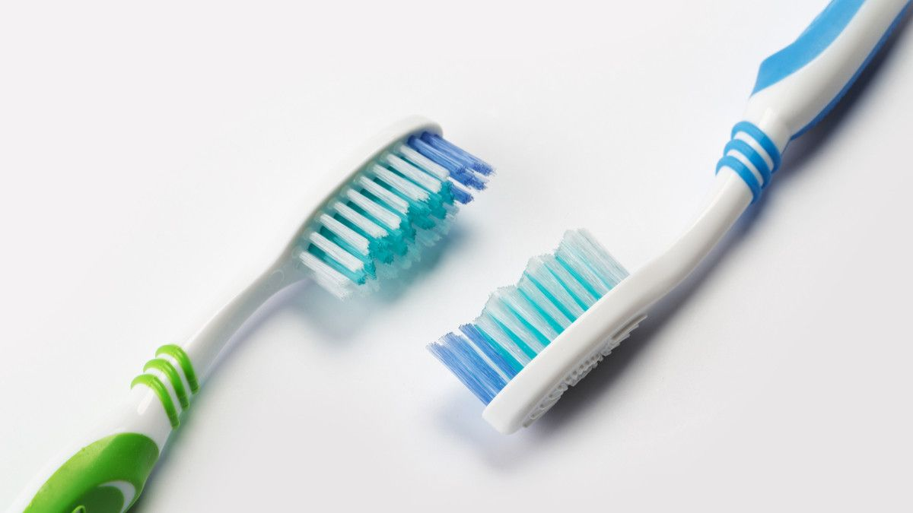

Gigi berfungsi untuk mengucapkan kata-kata dengan jelas(berbicara).
Gigi penting untuk penampilan dan dapat membentuk wajah.
Mengunyah makanan dengan gigi adalah langkah awal dalam proses pencernaan.
TIPS MERAWAT GIGI ANAK
Menggosok gigi batita sebaiknya tidak menggunakan pasta gigi namun cukup digosok dengan
sikat gigi yang sesuai dengan usia anak.
Memakai sikat lidah, lidah bisa menjadi tempat berkumpulnya bakteri yang dapat menyebabkan
bau mulut.
Untuk anak batita usahakan berkumur menggunakan air yang sudah masak karena anak belum
begitu mahir berkumur yang dikhawatirkan anak menelan air dan pasta gigi.
LANGKAH-LANGKAH MENYIKAT GIGI
Pilih sikat gigi yang berserat baik, lembut, dan tidak terlalu keras dengan gagang lurus
serta sikat sesuai dengan ukuran mulut.

Gosok gigi secara benar & teratur dalam waktu 2x sehari, setelah makan dan sebelum tidur.
Menggosok gigi setelah makan bertujuan untuk mengangkat sisa-sisa makanan yang menempel di
permukaan ataupun di sela-sela gigi dan gusi. Sedangkan menggosok gigi sebelum tidur berguna
untuk menahan perkembangbiakan bakteri dalam mulut karena dalam keadaan tidur tidak
diproduksi ludah yang berfungsi membersihkan gigi & mulut secara alami
Untuk gigi atas, gerakan sikat gigi dari atas ke bawah dan sebaliknya.
Posisi sikat gigi 45 derajat di daerah perbatasan antara gigi & gusi